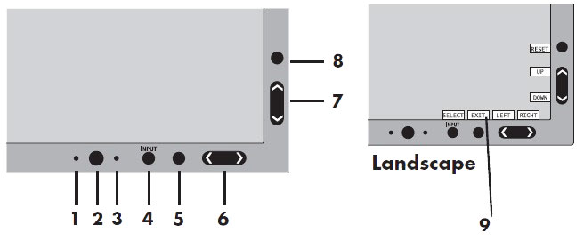

Illustration 6: NEC 1990SXi LCD Monitor Control Buttons

| Description | Function | |
| 1 | Ambibright Sensor | Detects the level of ambient lighting allowing the monitor to make adjustments to various settings resulting in a more comfortable viewing experience. Do not cover this sensor. |
| 2 | Power | Turns the monitor on and off. |
| 3 | LED | Indicates that the power is on. Can be changed between blue and green in the Advanced OSM Control menu. |
| 4 | INPUT/SELECT | Enters the OSM Control menu. Enters OSM sub menus. Changes the input source when not in the OSM Control menu. |
| 5 | EXIT | Exits the OSM sub menu. Exits OSM Control menu. |
| 6 | LEFT/RIGHT | Navigates to the left or right through the OSM Control menu. |
| 7 | UP/DOWN | Navigates up or down through the OSM Control menu. |
| 8 | RESET/ROTATE OSM | Resets the OSM back to factory settings. Pressing when the OSM is not showing rotates the OSM Control menu between portrait and landscape mode. |
| 9 | KEY GUIDE | The Key Guide appears on screen when the OSM control menu is accessed. The Key Guide will rotate when the OSM control menu is rotated. |